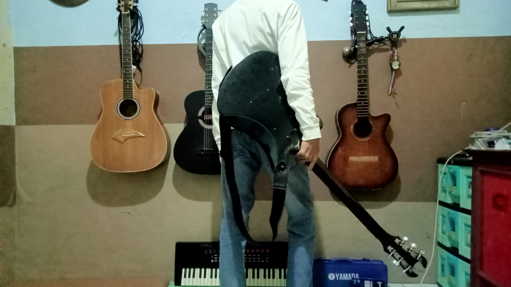

Halo everone, ide awal pembuatan cerita メンタル Refusal ini aku yang melakukannya. Namaku Milano, remaja yang lahir dan dibesarkan di Bandung, tahun kelahiran 2010.
selama perjalananku untuk menjadi orang dewasa, aku hidup di lingkup sosial yang jauh dari pergaulan anak muda. Bukan karena aku tak ingin, banyak kenalanku bilang untuk mendekatiku itu cukup sulit, aku pun memiliki pendapat yang sama dengan mereka, yaitu karena "socialy awkward". Ungkapan tersebut sering membuatku mengurung diri di rumah, terjebak dari dilema yang tinggi bagaikan gunung.
Namun, tanpa aku sadari, di titik itulah logikaku mulai berjalan, aku mulai memiliki minat untuk berkembang. Minatku dimulai dengan mempelajari psikologi dasar, menggambar, membaca artikel, bermusik, dan membuat website seperti yang sedang kalian kunjungi saat ini.
メンタル Refusal adalah bentuk minatku dari sejak aku duduk di bangku sekolah dasar hingga teks ini dibuat.
- 25 Februari 2026